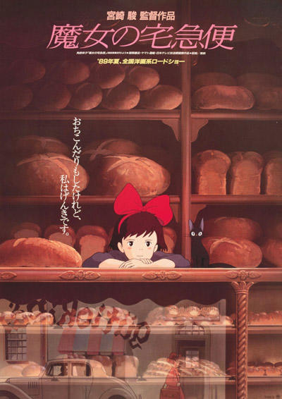

風の谷のナウシカ
作品ページ
1984年公開。
大戦争により文明が崩壊してから1000年経った世界で、自然を愛する少女・ナウシカが大国同士の争いに巻き込まれていく物語。
天空の城ラピュタ
作品ページ
1986年公開。
空に浮かぶ伝説の帝国ラピュタと「飛行石」を持つ少女・シータをめぐる物語。
魔女の宅急便

作品ページ
1989年公開。
しきたりにより1年間の修行に出た13歳の魔女・キキが町の人々と交流しながら成長していく物語。
千と千尋の神隠し
作品ページ
2001年公開。
不思議な世界に迷い込んだ少女・千尋が、様々な人々とかかわりながら元の世界に戻ろうとする物語。
ハウルの動く城
作品ページ
2004年公開。
魔女により老婆の姿に変えられてしまった少女・ソフィーと魔法使いのハウルが“動く城”で奇妙な共同生活を始める物語。
崖の上のポニョ
作品ページ
2008年公開。
崖の上の家に住む5歳の少年・宗助と不思議な魚の女の子・ポニョの出会いから始まる物語。